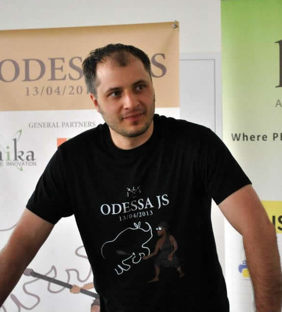

about
Eldar Djafarov

nodejs-dev / UA JS community guy
Ukrainian JS community leader and nodejs evangelist.1
2
3
4mail: djkojb@gmail.com
skype: ka_djko
github: edjafarov
twitter: @edjafarov
In case you are thinking of hiring me you should know several things about what I can and what values I am standing on.
I am an agile product developer - I care about product more than about code which it would implement. My goal is to use your business knowledge to create great product for your customers.
I think managers are useless. Most of stuff managers usually do is just useless. Other roles could be taken by a team. Though I think to be effective - everyone of a team should commit into product.
Please before hiring me ensure that you need exactly my experitise and not just closing abstract senior JavaScript developer position. That would not probably work and I am sure that we can spend our working hours much better. Give this page to some technical guy to evaluate me if required before contacting me.
I am fullstack developer and I can build reasonable architecture top-to-bottom.
I love JavaScript and I think that you can solve 80% of webapps in JavaScript effectively. Though, I would never start building other 20% in JavaScript just because I love it.
My stack-of-choise is:
- CommonJs for code management
- component.js for dependency mamagement
- React.js for UI modules
- semantic styling
- node.js for backend
- MongoDB, Redis as a DB
I would prefer not to build anything with angular.js because I think that it has essential flaws.
I do not have CV - you can use my linkedin profile.
To know more about my tecnical skills you can check my professional blog, my slideshare and github